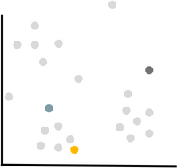
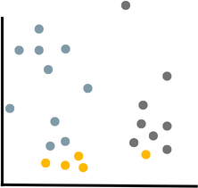
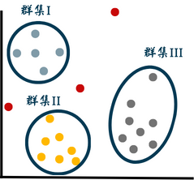

如何運用大數據分析金融詐騙
研究動機＆引言
近年來，金融詐騙案件在全球範圍內急劇增加，給金融體系和普通民眾造成了嚴重的損失。這些詐騙行為多樣且隱匿，犯罪分子不斷采用新的手法來規避傳統防範措施。
我們研究的動機在於探索如何運用大數據分析方法，提高金融詐騙檢測的效率和精準度。大數據分析技術具有處理龐大且多樣數據源的能力，能夠從海量信息中挖掘潛在的模式和趨勢，為金融機構提供更全面的詐騙風險評估。
大數據分析的方法
行為分析
藉由搜集正常的用戶行為並分析用戶的交易信息，系統可以建構基本行為模式。當出現不尋常的行為，系統可以發出警報，如大額交易、異地交易或非常規時間的交易。
自動化決策
將大數據和自動化決策系統結合，當系統檢測到異常活動時，能自動啟動預先的防範措施，如暫停交易、通知用戶，向相關機構報告。
大數據結合ＡＩ
舉例：大數據分析犯罪樣態，銀行推AI防阻詐騙。銀行與刑事局聯合建置金融詐騙偵測暨預警機制，透過AI與大數據技術來分析詐欺類型與交易模式，找出案件共通性與預警指標。
K-means 聚集分析
- 對所有數據進行分組，將相似的數據聚集，並找出不屬於任一群集的異常數據
- 輸入：大量交易數據（金額、地點、類型等）
- Step1: 決定分群數量，也就是Ｋ的值

- Step2: 隨機選取Ｋ個點作為群集中心

- Step3: 將各點分類到離自己最近的群集中心

- Step4: 重複Step2~4，直到群集不變，群集中心不動為止
- 輸出：根據分析結果，可以從群集中近一步分析各數據之共通點，並發現異常數據預警指標，識別出潛在詐欺活動的指標或模式
- 資料來源：銀行交易紀錄、在線平台交易數據等
Advantages
- 原理簡單
- 計算速度快
- 易於執行和解釋
- 具備可擴展性，能處理大量數據集
Limitations
- 必須先決定分群的數目（Ｋ值）
- 結果會受Ｋ值和中心點位置影響，若設定有誤，將有失準確性
- 依歐基李德距離進行分群，但不適用於非數字和非分類的數據
challenge & solution
資料品質
- 確保資料來源的正確性及可信度
- 數據清理（Data Cleansing）：對缺失、異常和重複值進行清理
- 數據標準化（Standardization）：統一數據格式和單位
- 特徵工程（Feature Engineering）：轉換、建構（新增）、降維（減少）
未來發展
實時監控
運用大數據技術，金融機構可以實時監控大量交易數據，以檢測任何異常的交易活動，有助於迅速發現可能的詐騙行為，並立即採取行動。
結合機器學習和人工智慧
未來能結合機器學習算法和人工智慧技術，建立更先進的詐騙檢測系統，學習詐騙者的行為模式，並隨時間不斷進化，應對新型詐騙手法。